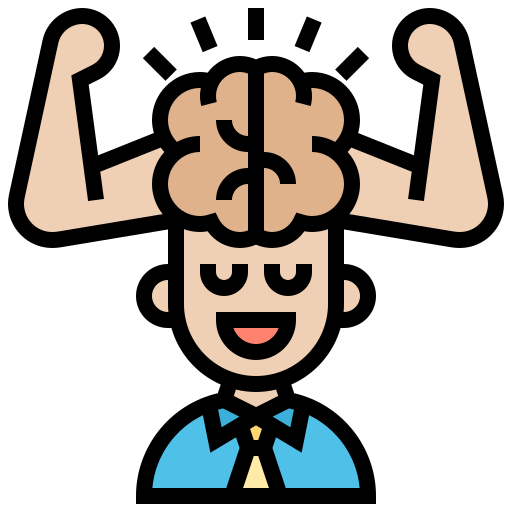
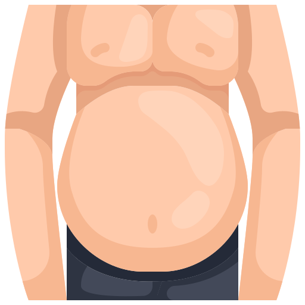

El deporte te ayuda a superarte a romper estereotipos demuestra competencia, trabajo en equipo y otras habilidades.
El término deporte es una actividad física, básicamente de carácter competitivo y que mejora la condición física\
del individuo que lo practica, de igual forma cuenta con una serie de propiedades que lo hacen diferenciarse del juego,
un gran ejemplo de este es el futball el cual te vuelves mejor segun vayas mejorando tu forma fisica
y te ayuda a ser un mejor competidor menos toxico y mas apasionado al deporte.
Efectos del deporte
Te hace mas fuerte, sube tu esparanza de vida, te hace mas templario y te da otros valores.
Ademas te ayudan a ser mejor persona atravez de la superacion y del esfuerzo fisico y mental.
Lo que me gusta del deporte
Me gustan los avanzes que le dan a la humanidad, el conocimiento y la habilidad fisica.
Football en ultimo porque es muy primitivo y repetitivo, americano es muy violento y muy americano, basketball
interesante pero sus reglas deberian de ser actualizadas, demon time porque ni siquiera es bueno, karate, porque
es bueno para pelear, ping pong porque es muy actualizado y interesante, tenis porque es ping pong pero grande,
lanzamiento porque es muy interesante y demuestra que nos superamos, atletismo porque es muy entretenido😚😚😚😚
y ajedrez porque muestra nuestras habilidades mentales.
Estas páginas me ayudaron a poder desarrollar el blog y a mejorar mis ideas y conocimientos les estoy
altamente agradecido 😪😯😯, AMEN, EKIDE, pero la verdad creo que habeces tenemos que crecer como personas para
ser mas humanos -Luis Manuel Gutierrez 2002-2022.
EVOLUCION del DEPORTE.
 Video de Youtube
18/01/22
Deportes
El video explica perfectamente porque el deporte es una gran hobby
El video reflexiona mucho sobre las apuestas sobre el futbol y como puedes tomar parte del juego sin ser un jugador.
 Deportes
18/02/22
El término deporte es una actividad física, básicamente de carácter competitivo y que mejora la
condición física del individuo que lo practica, de igual forma cuenta con una serie de propiedades
que lo hacen diferenciarse del juego. Por su parte la Real Academia Española (RAE) define este término como
una actividad física que es ejercida por medio de una competición y cuya práctica requiere de entrenamiento
y normas.
En general la definición de deporte va relacionada con la actividad física, sin embargo, es necesario tener en
cuenta que no se debe de confundir con el ejercicio físico, ya que existen juegos como el ajedrez que no necesita
de actividad física pero sí agilidad y gran concentración. La mente forma parte del cuerpo y su actividad es
considerada como actividad física más no como ejercicio físico.
Por su parte el Comité Olímpico Internacional señala que el deporte es un derecho humano y reza lo siguiente
toda persona debe tener la posibilidad de practicar deporte sin discriminación de ningún tipo y dentro del espíritu
olímpico, que exige comprensión mutua, solidaridad y espíritu de amistad y de juego limpio”.
En general la definición de deporte va relacionada con la actividad física, sin embargo, es necesario tener en cuenta que no se debe de confundir
con el ejercicio físico, ya que existen juegos como el ajedrez que no necesita de actividad física pero sí agilidad y gran concentración.
La mente forma parte del cuerpo y su actividad es considerada como actividad física más no como ejercicio físico,
https://www.espn.com.mx/
Los perifericos
Es muy importante que el deportista tenga buena capacidad y respuesta física para obtener el resultado deseado
de igual forma el equipamiento y la inteligencia son vitales dentro de la competencia. Más allá de competir el deporte es entretenimiento
para quienes lo practican y lo miran, el Comité Olímpico Internacional señala que el deporte es un derecho humano y reza lo siguiente
toda persona debe tener la posibilidad de practicar deporte sin discriminación de ningún tipo y dentro del espíritu olímpico, que exige
comprensión mutua, solidaridad y espíritu de amistad y de juego limpio.
Es muy importante que el deportista tenga buena capacidad y respuesta física para obtener el resultado deseado, de igual forma el equipamiento
y la inteligencia son vitales dentro de la competencia. Más allá de competir el deporte es entretenimiento para quienes lo practican y lo miran.
https://www.tudn.com/
Hallazgos arqueológicos han evidenciado que desde antes del año 4 mil a.C. se realizan eventos deportivos en regiones de China. Fueron tan populares
los deportes que cada vez eran más las disciplinas que se practicaban y mayor número de aficionados al punto de que empezaron hacerse de manera profesional
y los deportistas empezaron a ganar dinero por competir..
Aquellos deportes que requieren el agua como escenario, ya sea en el mar, en un río o en piscinas, son los deportes acuáticos. Estos implican una actividad
física que puede practicarse bajo el agua, sobre el agua en la propia agua, Los deportes acuáticos más importantes son: Natación, Waterpolo, Surf, Buceo,
Remo, Bodyboarding, Windsurf, Hidrospeed, Saltos acrobáticos, Rafting, Kitesurf y Piragüismo
Deportes de Aventura
La característica básica que determina a los deportes de aventura es el contacto de los/las deportistas con la propia naturaleza.,
los humanos contaban las cosas con lo único que tenían al alcance:
En este caso, por tanto, los deportes de montaña pueden considerarse también deportes de aventura, puesto que se desarrollan en el medio natural,
como pueden ser: Escalada, Orientación, Espeleología, Rápel y Senderismo.
En el agua también se desarrollan deportes de aventura populares, que comparten categoría con los deportes acuáticos, como: Piragüismo, Kayak e Hidrospeed.
https://www.msn.com/es-mx/deportes
Si eso no le quitó el aliento, esto sí lo hará: las investigaciones demuestran que participar en programas deportivos durante la edad de los niños pequeños parece
no tener ninguna ventaja a largo plazo en el rendimiento futuro de los deportes. Ah, ¿significa que pasar 3 horas diarias practicando con su hijo de 4 años no la
hará un mejor atleta del jardín de niños ni de la escuela primaria? Es correcto. Las destrezas específicas se pueden definir por práctica repetitiva únicamente después
de haber alcanzado el nivel de desarrollo motor.
Estas actividades pueden formar bases sólidas para la participación en ejercicios y deportes en los que las destrezas futuras pueden construir muros para la Gran barrera
de los deportes. Sin embargo, a manera de advertencia; simplemente porque estas actividades pueden empezar a practicarse en una etapa temprana de la vida no significa que
estos deportes deban realizarse de forma agresiva en estas etapas de la vida. Todos hemos visto momentos olímpicos que muestran el surgimiento de las estrellas deportivas
que empezaron su disciplina a los 3 años de edad. Pero eso no significa que empezaron a entrenar constantemente o a competir fuertemente a los 3 años de edad.
 ¿Que es el deporte?
¿Que es el deporte?.jpg)
 MOMASO
MOMASO .jpg)
.jpg)